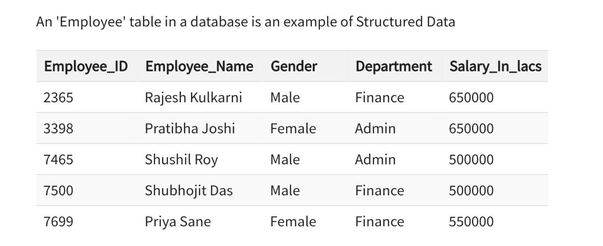
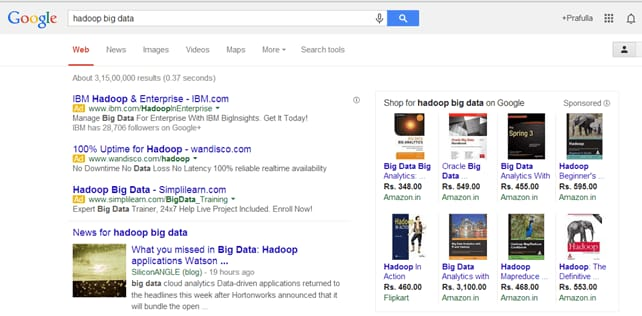
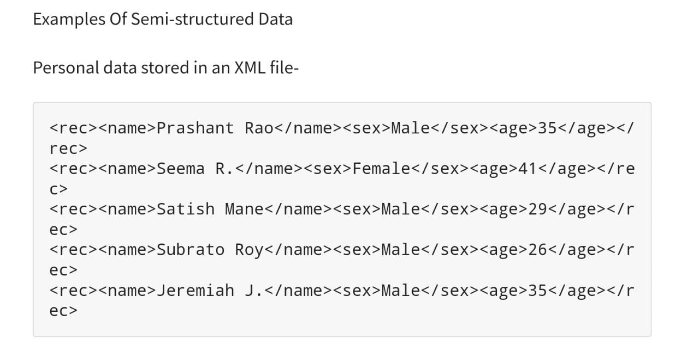

types of big data
- Structured
- Unstructured
- Semi-structured
Structured
Any data that can be stored, accessed and processed in the form of fixed format is termed as a 'structured' data.
Over the period of time, talent in computer science has achieved greater success in developing techniques for
working with such kind of data (where the format is well known in advance) and also deriving value out of it.
However, nowadays, we are foreseeing issues when a size of such data grows to a huge extent, typical sizes are
being in the rage of multiple zettabytes.
Do you know? 1021 bytes equal to 1 zettabyte or one billion terabytes forms a zettabyte.
Looking at these figures one can easily understand why the name Big Data is given and imagine the challenges
involved in its storage and processing.
Do you know? Data stored in a relational database management system is one example of a 'structured' data.
Examples Of Structured Data

Unstructured
Any data with unknown form or the structure is classified as unstructured data.
In addition to the size being huge, un-structured data poses multiple challenges in terms of its processing for
deriving value out of it.
A typical example of unstructured data is a heterogeneous data source containing a combination of simple text files,
images, videos etc. Now day organizations have wealth of data available with them but unfortunately,
they don't know how to derive value out of it since this data is in its raw form or unstructured format.
Examples Of Un-structured Data
The output returned by 'Google Search'

Semi-structured
Semi-structured data can contain both the forms of data. We can see semi-structured data as a structured
in form but it is actually not defined with e.g. a table definition in relational DBMS.

Data Growth over the years

Please note that web application data, which is unstructured, consists of log files, transaction history files etc.
OLTP systems are built to work with structured data wherein data is stored in relations (tables).